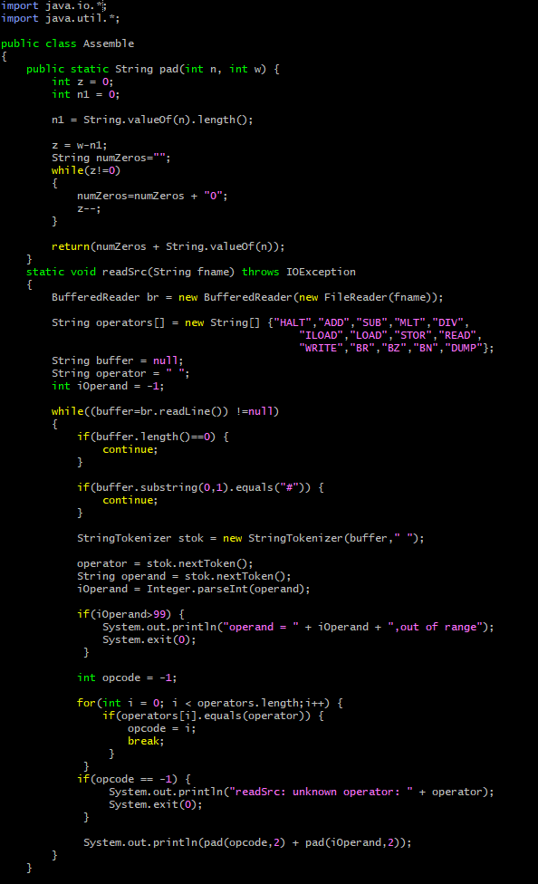
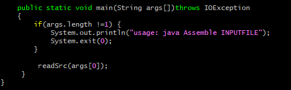
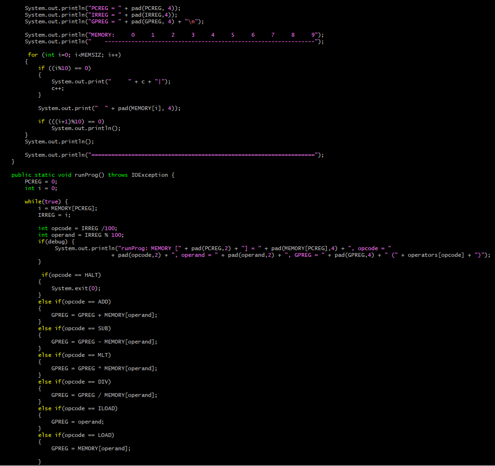
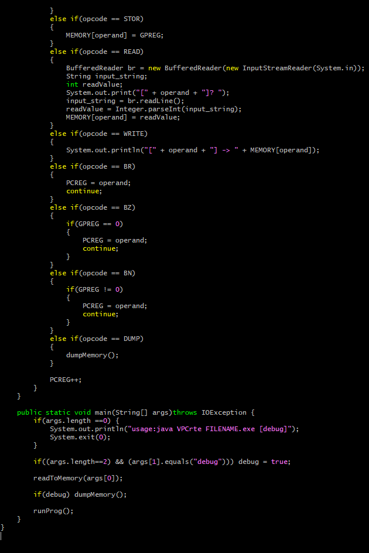
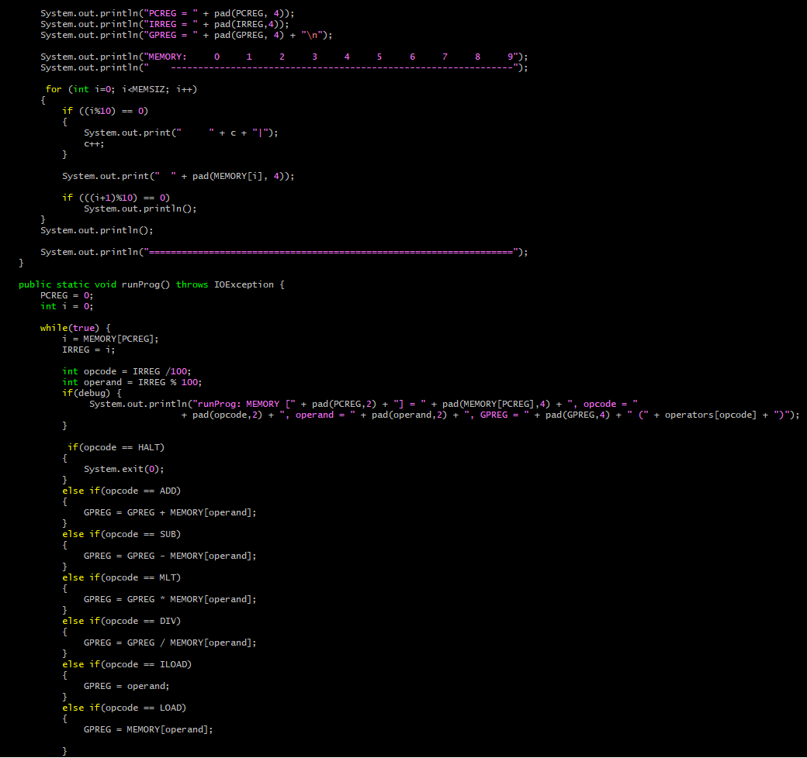
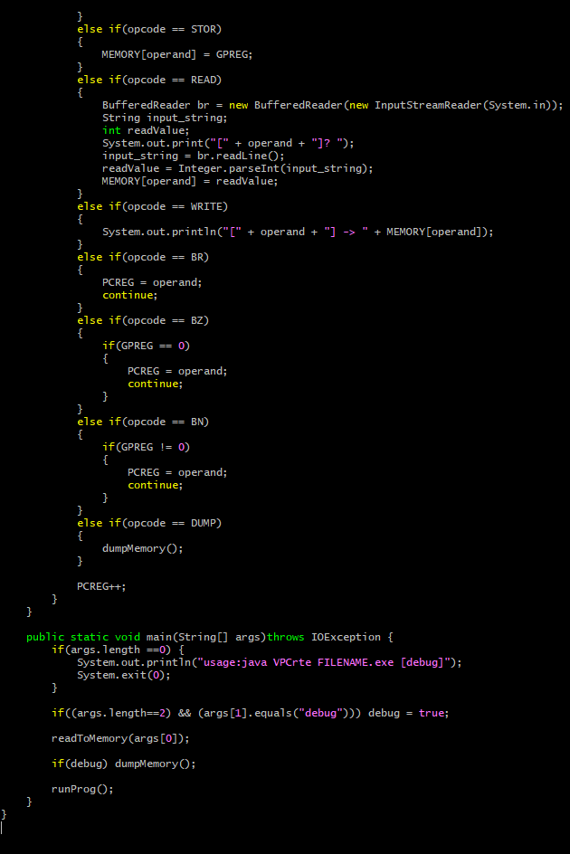
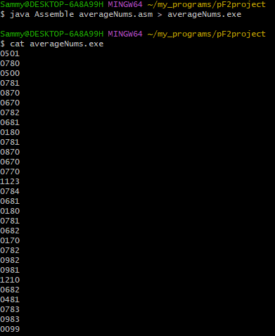
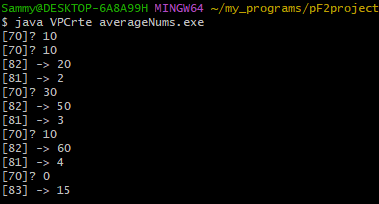
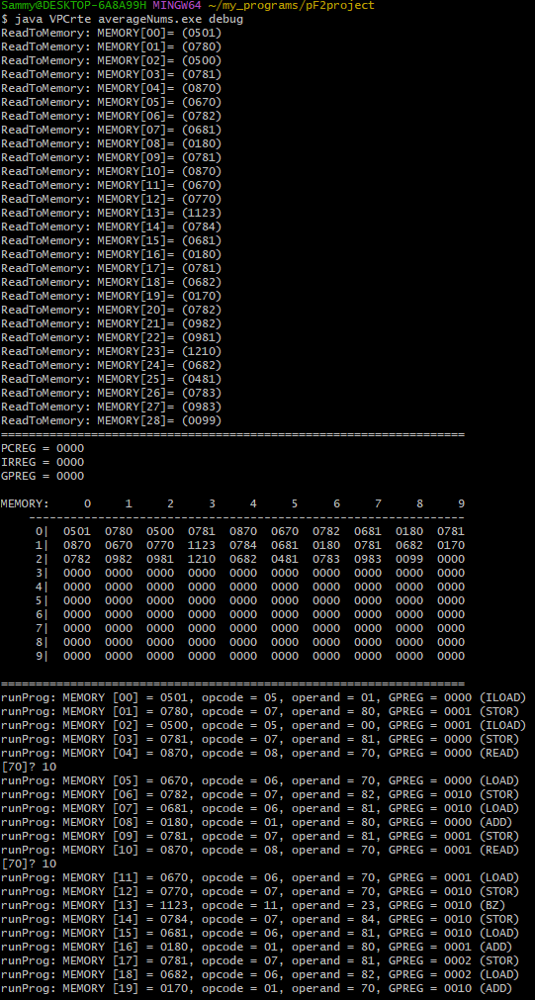
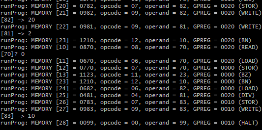

My Projects
-
Project 1
My first actual project was in my Programming Fundamentals II with professor Mark C, Usnick at Amarillo College in Texas. The project involved a set of programs that would read in assembly code, compile the assembly code, then finally run it on its own RunTimeEnvironment. All of this ofcourse was done with JAVA and the background environment was through BASH.
 This first program is labeled as Assemble.java and is used to read in the assembly code through the averageNums.asm file and in doing so will convert it to machine code.
 



This second program is labeled as VPCrte.java will ultimately decipher the machine code itself and utilize the different commands which is very barebones but nonetheless shows what everyone's computer is doing as you navigate to different browsers and environments.

The last program is the Assembly code itself labeled as averageNums.asm which takes the average of all the numbers entered into the command line. What makes this program interesting is we only utilized one GPREG which made finding the solution interesting. We would dump the unused numbers at the time into random memory locations and when needed pull the numbers into the GPREG to perform the actual calculations on.
With all the programs now shown, the first step is to run the assembly code into the Assemble.java file by using these commands: java Assemble averageNums.asm
Now the output file labeled as averageNums.exe can be utilized in the Virtual PC runtime environment to calculate the average of numbers.
 Finally there is a debug option implemented in the code that will give a visual representation of what is going on behind the scenes as the computer reads the information and performs its tasks.
-
Project 2
Description.
View Project